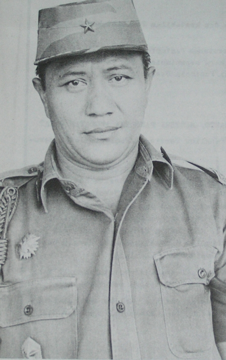

Jenderal TNI (Purn.)
Amir Machmud
| Lahir | : | 21 Februari 1923 |
| Meninggal | : | 21 April 1995 (umur 72) |
| Profesi | : | TNI |
| Jabatan | : | Kepala Badan Koordinasi Intelijen Negara |
Jenderal TNI (Purn.) Amir Machmud (21 Februari 1923 - 21 April 1995) adalah seorang Jenderal Militer Indonesia yang merupakan saksi mata penandatanganan Supersemar, sebuah dokumen serah terima kekuasaan dari Presiden Soekarno kepada Jenderal Soeharto. Amir Machmud lahir pada 21 Februari 1923 di Cimahi, Jawa Barat. Ia adalah anak kedua dari lima bersaudara dan ayahnya bekerja untuk sebuah perusahaan publik di bawah Pemerintah Kolonial Belanda. Setelah menyelesaikan pendidikannya pada tahun 1940, Amir Machmud mulai memikirkan karier yang ia akan lakukan. Pada tahun 1941 ia mengambil kursus topografi, meskipun tidak pernah datang untuk itu.
Kehidupan Saat Orde Baru
Kepala Badan Koordinasi Intelijen Negara (Bakin)
Amir Machmud menjabat sebagai Kepala Bakin pada tahun 1988 hingga tahun 1998. Selama masa jabatannya, Bakin memiliki peran kunci dalam menjaga keamanan negara dan mengawasi aktivitas intelijen di Indonesia. Selama Orde Baru, lembaga intelijen seperti Bakin memiliki peran yang kuat dalam mengamankan pemerintahan Soeharto dan melawan aktivitas yang dianggap subversif.
Peran dalam Stabilitas Politik
Selama jabatannya sebagai Kepala Badan Koordinasi Intelijen Negara (Bakin) dalam era Orde Baru di Indonesia, Amir Machmud memegang peran kunci dalam menjaga stabilitas politik. Namun, perannya terkait dengan pengawasan yang ketat terhadap kelompok oposisi, aktivis, dan media yang kritis terhadap pemerintah. Meskipun tujuannya adalah mencegah potensi kerusuhan politik, tindakan ini sering kali melibatkan pelanggaran hak asasi manusia dan tindakan otoriter, yang pada akhirnya menciptakan ketidakstabilan sosial dan politik yang lebih besar di masyarakat. Pengunduran dirinya pada tahun 1998, bersamaan dengan jatuhnya rezim Orde Baru, menandai awal era reformasi politik di Indonesia yang mengedepankan prinsip-prinsip demokrasi dan hak asasi manusia untuk mencapai stabilitas politik yang lebih inklusif.
Keterlibatan dalam Keamanan Nasional
Selama jabatannya sebagai Kepala Badan Koordinasi Intelijen Negara (Bakin) pada masa Orde Baru di Indonesia, Amir Machmud memainkan peran penting dalam menjaga keamanan nasional. Bakin, di bawah kendalinya, bertanggung jawab atas pengumpulan, analisis, dan penyediaan informasi intelijen yang berkaitan dengan potensi ancaman terhadap keamanan negara. Ini mencakup pemantauan terhadap kelompok oposisi politik, pergerakan militan, dan potensi gangguan terhadap stabilitas politik. Meskipun tindakan-tindakan tersebut sering kali menuai kontroversi karena terlibatnya dalam pelanggaran hak asasi manusia, pemerintahan Orde Baru percaya bahwa langkah-langkah ini diperlukan untuk menjaga keamanan dan stabilitas nasional serta mempertahankan otoritas pemerintah.
Kontroversi
Amir Machmud, sebagai Kepala Badan Koordinasi Intelijen Negara (Bakin) pada masa Orde Baru di bawah pemerintahan Presiden Soeharto, terlibat dalam sejumlah kontroversi serius yang mencakup pengawasan dan tindakan keras terhadap aktivis politik, mahasiswa, dan kelompok oposisi, termasuk operasi militer di Aceh dan keterlibatan dalam konflik Timor Timur yang melibatkan pelanggaran hak asasi manusia yang serius. Bakin juga dicurigai terlibat dalam kasus-kasus penghilangan paksa aktivis dan membatasi kebebasan pers. Pengunduran dirinya pada tahun 1998, bersamaan dengan jatuhnya Orde Baru, menandai akhir era otoritarian dan membuka jalan bagi reformasi politik di Indonesia.